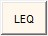
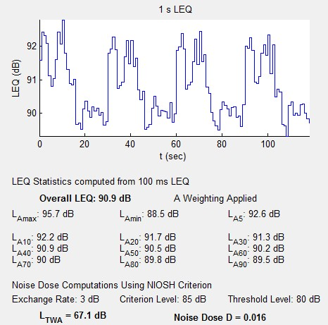
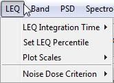
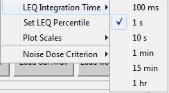
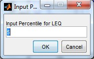
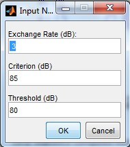

LEQ Mode

The "LEQ" button selects the LEQ analysis mode.
The Equivalent Noise Level or LEQ analysis mode is used to analyze the measurement file in a manner that mimics an integrating sound level meter as described in ANSI S1.43. The LEQ mode is selected by pressing the LEQ button and then the analysis button.
The LEQ will take the measurement file and compute a series of 100 ms LEQs applying the selected frequency weighting (A, C or Flat) before computing the LEQ. Any time weighting selected is ignored.
The 100 ms LEQ are then combined into longer term LEQ as selected by the user in the LEQ settings and plotted as shown below.
From the 100 ms LEQ statistics such as the overall LEQ, LEQMAX, LEQMIN, and LEQ percentile (L10, L20, L30, ... L90) are computed.
If A weighting is selected, the Noise Dose, D, and equivalent time-weighted noise level LTWA are computed as described in ANSI S12.19. An example output from the analysis is shown below

There are a number of user selectable settings that are found under LEQ menu entry

LEQ Integration Time sets the length of the LEQ integrations that are plotted and saved. Optional values are 100 ms, 1 s, 10 s, 1 min, 15 min and 1 hr.

Set LEQ Percentile lets the user input a level percentile for computation and display.

The Plot Scales option lets the user choose to have VSLM autoscale the plot or the user can input both x and y plot limits.
The Noise Dose Criterion lets the user select between NIOSH, OSHA and a user defined critierion.
In NIOSH mode the software uses a threshold of 80 dB, an 8 hour criterion of 85 dB and an exchange rate of 3 dB.
In OSHA mode the software uses a threshold of 80 dB, an 8 hour criterion of 90 dB, and an exchange rate of 5 dB.
In User mode the software lets the user input a threshold, an 8 hour criterion, and an exchange rate, all values in dB.

References:
ANSI, S1.43-1997 (R2007) American National Standard Specifications for Integrating Sound Level Meters: American National Standards Institute, 1997.
ANSI, S12.19-1996 (R2006) American National Standard Measurement for Occupational Noise Exposure: American National Standards Institute, 1996.
Copyright © 2011, Ralph T. Muehleisen
Created with the Freeware Edition of HelpNDoc: Easy to use tool to create HTML Help files and Help web sites